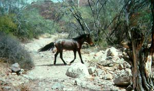
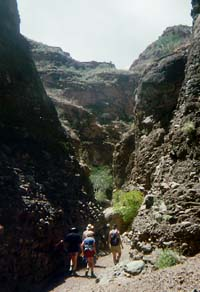
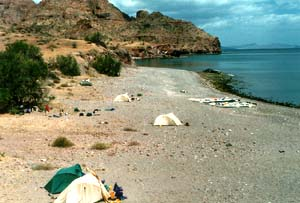

There was sand everywhere, and the wind was still blowing hard early in the morning. The sea was marked with whitecaps. We ate a huge breakfast, then packed for the day and outfitted our kayaks.
We were heading with the wind this morning, paddling less than a mile down along the coast to a hiking spot Martin knew. As we turned to put the wind at our backs, waves started sweeping by us and we picked up speed. Leslie and I paddled hard at first, then were picked up in the waves and surfed our boat along, moving faster than we had before. It was a thrill to be moving with the ocean, instead of working against it as we had been. We could hear cheers from the group as we cut through the water.
We found the cove and turned in to beach our kayaks. After loading up our day packs, we hiked inland through a washed out riverbed and then into an arroyo. We could hear a clanging ahead, and came up to a group of wild horses and mules, one of which had a bell around his neck. They ran free here, according to Martin, and would eventually be rounded up by their owners, who knew where they animals would go for water, and would listen for the ringing bell.

As we kept hiking, the arroyo narrowed and the trail got steeper. Soon, we were clamoring over boulders, and eventually there was no trail, just the sharp intersection of the canyon's walls. The rocks around us were cut smooth by fast-moving water; it was weird to think of this place being flooded as the sun beat down on us and we choked on the dust that was on everything. Around one bend, we stepped over a dead hawk and stopped to look at the amazing feathers, claws, as face. It was beautiful and gave no clues to what did it in.

Eventually, we reached the end: a series of cliffs that would be waterfalls in flash floods. It was near the top of the ridge we'd been climbing, and the wind howled through the break in the rocks, forming condensation and dropping a fine mist on us. A few of us climbed the first cliff, hugging the rocks tightly as we swung around to a small box of rocks and a deep pool of foul water. We admired an amazing large beetle sitting at the water's edge before climbing slowly back down to the group. After sucking down some oranges, we hiked back to the boats.

Naturally, we fought the wind back to camp, but were mostly used to it. That afternoon, a storm blew even harder than before, and big thunderclouds raced over us. As we sat eating, a few raindrops came down, and Martin -- the mighty outdoorsman -- strung a tarp between two kayaks to sleep under that night. Leslie and I, feeling as though we proved our point the first few nights, swallowed our pride and finally put up our own tent. We drove pegs as deep as we could, then covered them with sand and as many rocks as possible. It was secure, but still strained under the insane wind all night long.